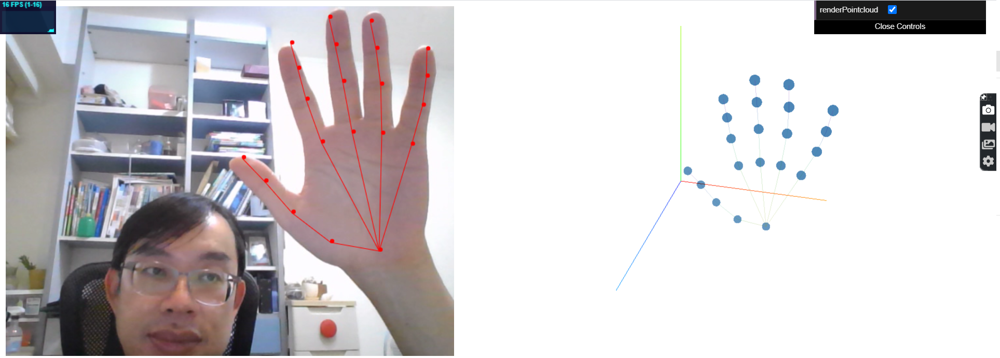
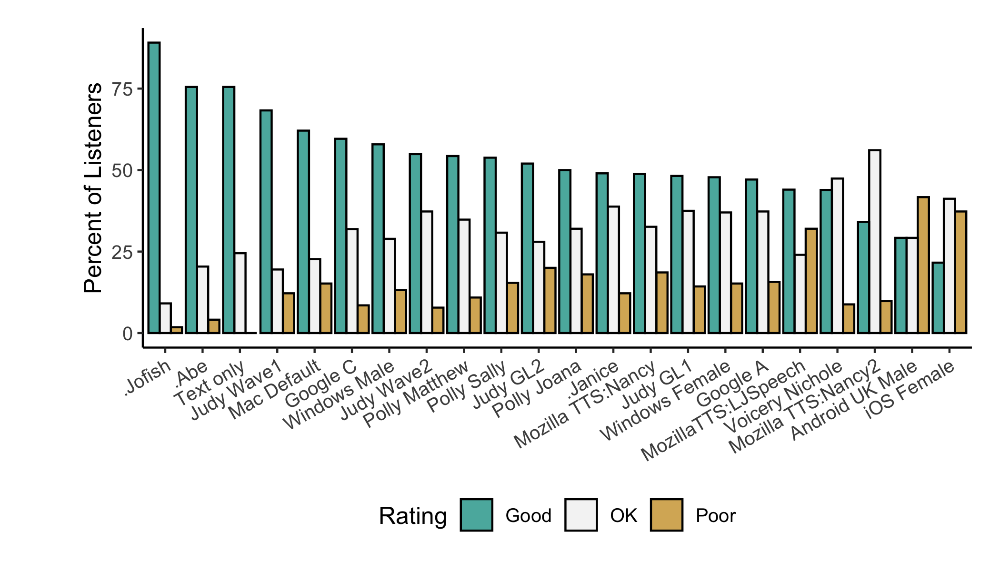
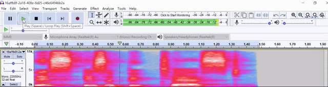

Deep Learning
Data Engineer


Data Science

Machine Learning

AI PPTs
This article collects excellent PPTs on AI.
This article collects excellent PPTs on AI.
With the data pipeline below to collect, pre-process, feature-engineer, NLP alogorithm applied to provide useful dashboard for analysis and further actions.
Data mining or ETL (extract-transform-load) process to collect a corpus of unstructured data.


Tokenization: Segmentation of running text into words.
Lemmatization: Removal of inflectional endings to return the base form.
Parts-of-speech tagging: Identification of words as nouns, verbs, adjectives etc.
Lanaguage detection: Identification of the lanauges from single or several sentensces even a short one.
Word Embeddings: Transforming text into a meaningful vector or array of numbers.
N-grams: An unigram is a set of individual words within a document; bi-gram is a set of 2 adjacent words within a document.
TF-IDF values: Term-Frequency-Inverse-Document-Frequency is a numerical statistic representing how important a word is to a document within a collection of documents.
Latent Dirichlet Allocation: Topic modeling algorithm for detecting abstract themes from a collection of documents.
Support Vector Machine: Classification algorithm for detection of underlying consumer sentiment.
Long Short-Term Memory Network: Type of recurrent neural networks for machine translation used in Google Translate.


A high level view of generic model and the refine model in the whole process.
The detailed NLP refinement model is as below to improve the models of NER Tagging in spaCy model on user feedback.
Another better idea is Active learning as below

and the whole data pipeline diagram for user feedback tagging is as below
This POC, a consequential POC of face-api.js, regonize the face from camera and find the nearest avatar from thousands avatars generated from avatar generators.
This project is interesting but still is in idea thinking phase.
SOD (Salient Object Detection) is a topics in deep learning that by given a image, SOD can automatically segmentize the most interested objects of the image without any hints. SOD learns how human see the interested objects by detecting the denisity of feature points and segmentize the most dense parts. So far, U2Net provide a state of art performance.
These are the first results of the U2Net on target benchmark images. For the full results can be checked in Chimay-SOD1 and asubset Chimay-SOD2 can be found.
{% include ideal-image-slider/slider.html selector="slider1" %}In this page, image slider for jekyll and its js code is used for image slider. Also a Jekyll Ideal Image Slider Include Demo shows the possiblity of Ideal Image Slider.
| Git Repo | Status | Progress | Comments |
|---|---|---|---|
 |
tensorflow.js POC #1- and WhoIsTalking for PIC #9. |

| Git Repo | Status | Progress | Comments |
|---|---|---|---|
 |
Pytorch POC #2 | ||
 |
Pytorch POC #3 | ||
 |
Pytorch POC #4 |
pinreset and its pin alogirthm
Here gives a demo for amplitude cohort download and query JSON-Server for Amplitude User Cohorts
| Git Repo | Status | Progress | Comments |
|---|---|---|---|
|
Pytorch POC #2 | ||
|
Pytorch POC #3 | ||
|
Pytorch POC #4 |
Based on last time keyword spotting topics on Chimay, I even mention items about TTS (text-to-speech) and showed POCs. Here I adopt Opentts to create a API server for speech and later ultrasound generation from Web.

In live opentts demo site, you can check the conventional (non-deep learning) speech synthesis (marytts, nanotts) and deep-learning ones (Mozillatts with Tacotron and Tacotron2). Deep-learing ones provide a beeter speech quality. A public MOS test results as below also show similar conclusions.

Demo wave file as

Swagger API also includes the following:
The following diagram is from mozzila project. It shows the whole picture of nature lanaugege iteration with end users. But, of course, it will be a long way to go.